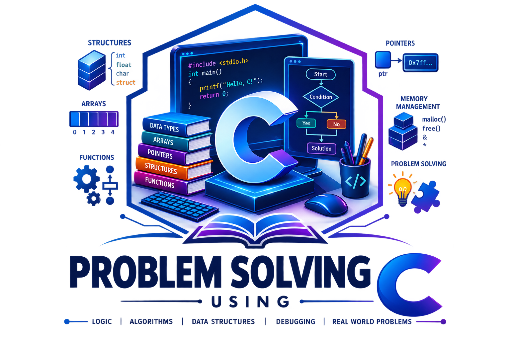
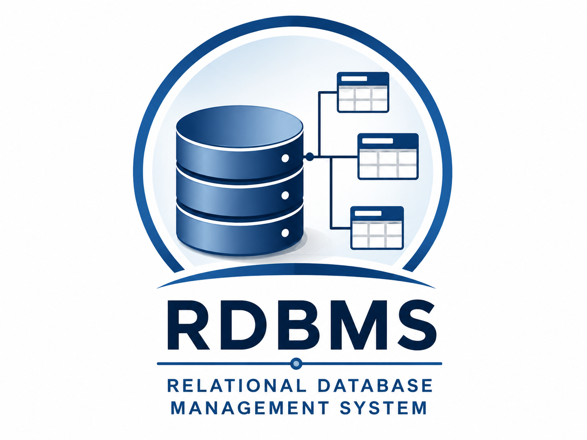
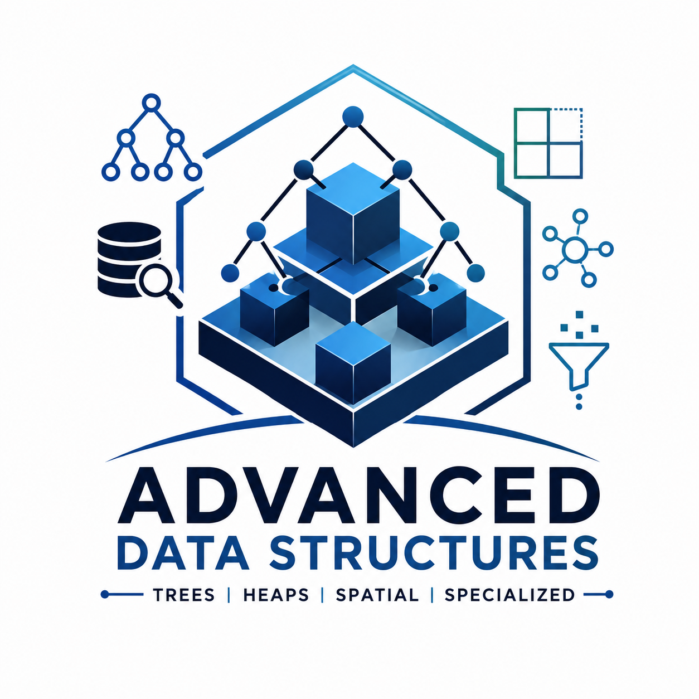
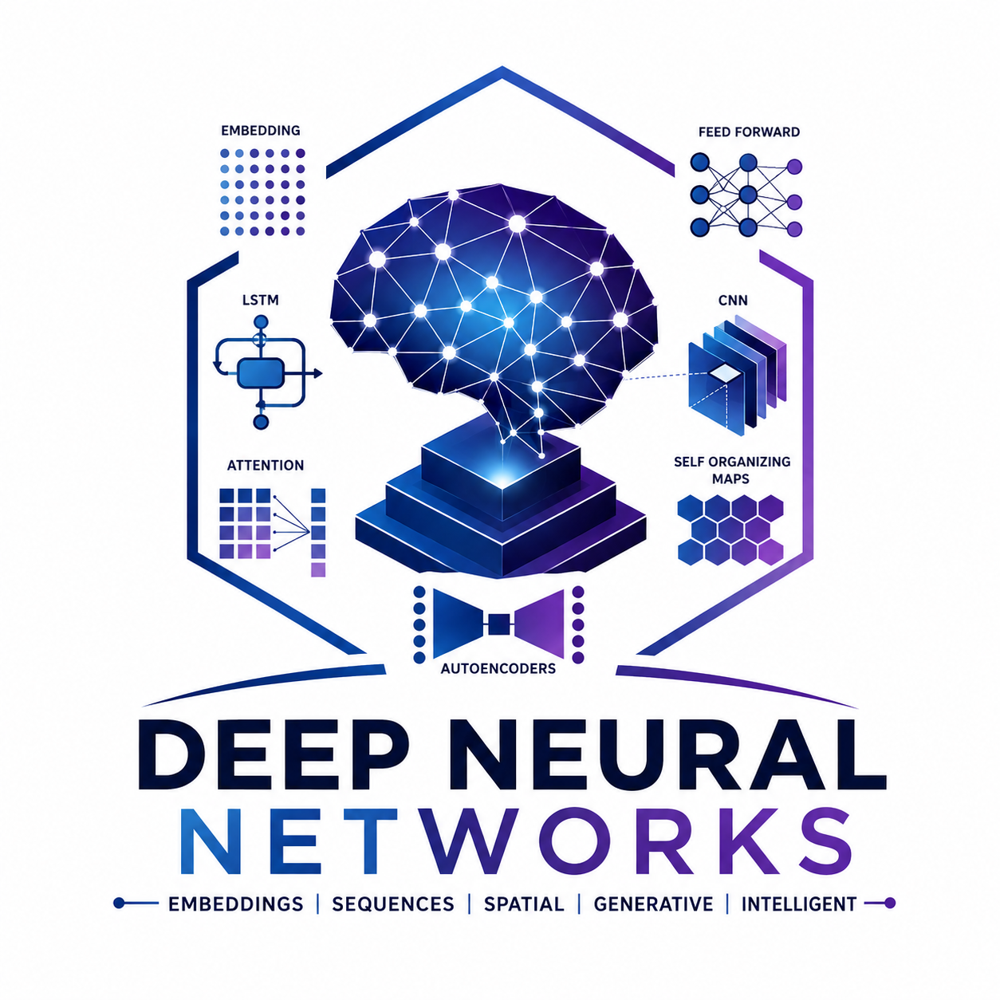

Courses Taught
Dedicated lecture notes and learning material for each course. Click a card to visit the course site.

Problem Solving using C
Programming fundamentals and problem-solving techniques using C.
Developed by Abhay Singh Bisht Visit site
Relational Database Management Systems
Concepts, design and practice for relational databases.
Developed by Dr. Manu Shrivastava Visit siteDesign & Analysis of Algorithms
Notes, examples and problem sets on algorithm design and complexity analysis.
Developed by Abhay Singh Bisht Visit site
Advanced Data Structures
In-depth coverage of advanced data structures and their applications.
Developed by Dr. Manu Shrivastava Visit site
Deep Neural Networks
Foundations and architectures for deep learning and neural networks.
Developed by Dr. Manu Shrivastava Visit site